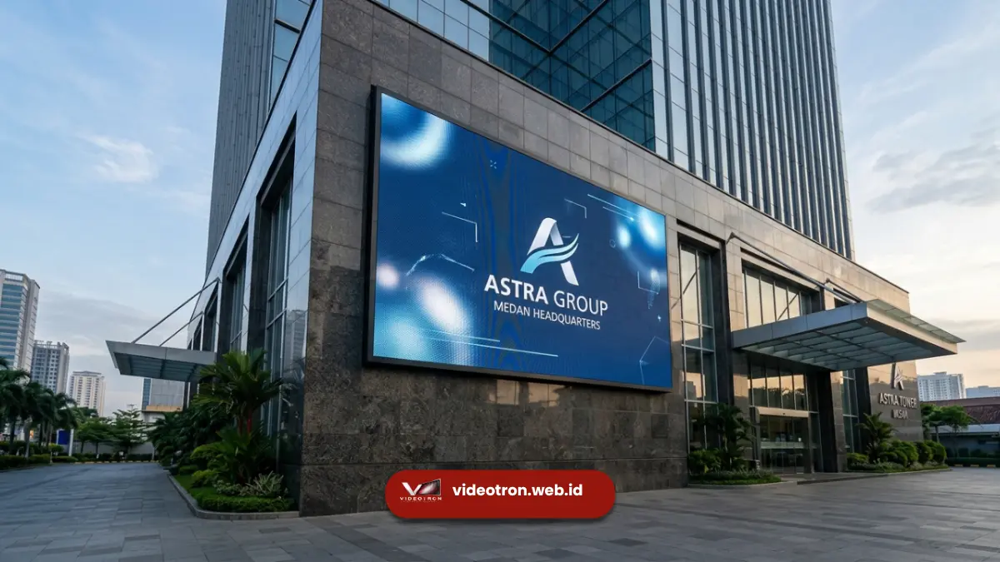

Videotron Medan adalah layar LED besar yang membantu bisnis, gedung komersial, dan instansi di Medan menampilkan konten promosi, informasi, atau branding secara dinamis kepada khalayak luas.
Dibandingkan media promosi statis, videotron memberikan fleksibilitas konten yang dapat diperbarui kapan saja tanpa biaya cetak ulang. Vendorvideotron.web.id menyediakan videotron Medan yang disesuaikan dengan kebutuhan bisnis, mulai dari fasad gedung hingga panggung event.
Poin Penting:
- Videotron membantu bisnis di Medan menjangkau audiens lebih luas dibanding media cetak konvensional
- Konten videotron dapat diperbarui secara real-time sesuai kebutuhan promosi terkini
- Sektor properti, ritel, hospitality, dan pemerintahan di Medan banyak memanfaatkan videotron
- Videotron mendukung berbagai format konten mulai dari video, gambar statis, hingga animasi interaktif
- Investasi videotron memberikan nilai jangka panjang dibanding biaya berulang media cetak
- 1. Apa Itu Videotron Medan dan Siapa yang Membutuhkannya?
- 2. Apa Keunggulan Videotron Dibanding Media Promosi Konvensional?
- 3. Bagaimana Videotron Meningkatkan Efektivitas Promosi?
- 4. Apakah Videotron Lebih Menarik Perhatian Dibanding Baliho?
- 5. Sektor Bisnis Apa Saja yang Paling Terbantu dengan Videotron di Medan?
- 6. Bagaimana Sektor Properti dan Perhotelan Memanfaatkan Videotron?
- 7. Bagaimana Sektor Ritel dan Kuliner Menggunakan Videotron?
- 8. Bagaimana Instansi Pemerintah Memanfaatkan Videotron untuk Informasi Publik?
- 9. Apa yang Perlu Dipersiapkan Sebelum Memasang Videotron?
Apa Itu Videotron Medan dan Siapa yang Membutuhkannya?
Videotron Medan merupakan layar LED berskala besar yang dipasang di area strategis untuk menampilkan konten visual kepada publik.
Kebutuhan videotron di Medan datang dari berbagai kalangan, mulai dari pemilik gedung komersial yang ingin memaksimalkan fasad bangunan sebagai media iklan, pelaku ritel yang ingin menarik perhatian pengunjung, hingga instansi pemerintah yang membutuhkan sarana komunikasi publik yang efektif.
Sebagai kota dengan aktivitas ekonomi yang terus berkembang, Medan memiliki banyak titik strategis seperti kawasan perbelanjaan, jalan protokol, dan pusat perkantoran yang menjadikan videotron sebagai investasi promosi yang relevan.
Apa Keunggulan Videotron Dibanding Media Promosi Konvensional?
Videotron menawarkan sejumlah keunggulan yang sulit ditandingi media promosi tradisional seperti baliho atau spanduk.
Keunggulan ini menjadi alasan utama mengapa semakin banyak bisnis di Medan beralih ke videotron sebagai media komunikasi visual utama mereka.
Bagaimana Videotron Meningkatkan Efektivitas Promosi?
Konten pada videotron dapat diganti dalam hitungan menit tanpa perlu proses cetak ulang, sehingga bisnis dapat menyesuaikan promosi dengan momen tertentu seperti hari besar, program diskon, atau peluncuran produk baru.
Fleksibilitas ini memberikan efisiensi biaya jangka panjang dibandingkan media cetak yang harus diperbarui secara fisik setiap kali ada perubahan konten.

Apakah Videotron Lebih Menarik Perhatian Dibanding Baliho?
Konten bergerak seperti video dan animasi pada videotron secara alami lebih menarik perhatian mata dibandingkan gambar statis.
Hal ini membuat pesan promosi lebih mudah diingat audiens yang melintas, terutama di area dengan lalu lintas pejalan kaki atau kendaraan yang padat.
Sektor Bisnis Apa Saja yang Paling Terbantu dengan Videotron di Medan?
Berbagai sektor usaha di Medan memanfaatkan videotron sesuai kebutuhan komunikasi masing-masing, dengan pendekatan konten yang disesuaikan dengan target audiens mereka.
Bagaimana Sektor Properti dan Perhotelan Memanfaatkan Videotron?
Pengelola gedung komersial dan hotel di Medan sering menggunakan videotron pada fasad bangunan untuk menampilkan branding, informasi fasilitas, atau promosi acara yang sedang berlangsung.
Videotron pada fasad gedung juga berfungsi sebagai penanda identitas visual yang memperkuat citra bangunan di tengah kota.
Bagaimana Sektor Ritel dan Kuliner Menggunakan Videotron?
Pelaku ritel dan kuliner memanfaatkan videotron untuk menampilkan promosi produk, menu terbaru, atau program loyalitas pelanggan secara langsung di titik penjualan.
Pendekatan ini terbukti efektif menarik perhatian calon pembeli yang berada di sekitar lokasi usaha.
Bagaimana Instansi Pemerintah Memanfaatkan Videotron untuk Informasi Publik?
Instansi pemerintah di Medan turut memanfaatkan videotron sebagai media penyampaian informasi publik, seperti pengumuman layanan masyarakat, imbauan keselamatan, atau informasi kegiatan daerah. Media ini dinilai efektif karena mampu menjangkau masyarakat secara luas dan real-time.
Apa yang Perlu Dipersiapkan Sebelum Memasang Videotron?
Sebelum memasang videotron, penting untuk menentukan tujuan penggunaan secara jelas, apakah untuk promosi komersial, branding korporat, atau informasi publik.
Penentuan tujuan ini akan memengaruhi pemilihan lokasi, ukuran layar, dan jenis konten yang akan ditampilkan agar hasilnya optimal.
Selain itu, ketersediaan daya listrik yang memadai dan struktur bangunan yang mendukung juga menjadi pertimbangan penting sebelum proses instalasi dilakukan.
Videotron Medan menjadi investasi strategis bagi bisnis dan instansi yang ingin meningkatkan visibilitas serta efektivitas komunikasi visual mereka. Dari sektor properti, ritel, hingga pemerintahan, videotron menawarkan fleksibilitas dan daya tarik yang sulit ditandingi media promosi konvensional.
Jika Anda ingin menghadirkan videotron yang sesuai dengan kebutuhan bisnis atau instansi Anda di Medan, konsultasikan kebutuhan Anda bersama vendorvideotron.web.id dan dapatkan solusi visual yang tepat sasaran.

Hawa Nadira
LED Technology Consultant dan Visual Educator
Konsultan dan spesialis solusi display digital berdedikasi tinggi yang fokus membagikan panduan edukatif mengenai penerapan teknologi layar LED videotron untuk kebutuhan interior modern di Indonesia.